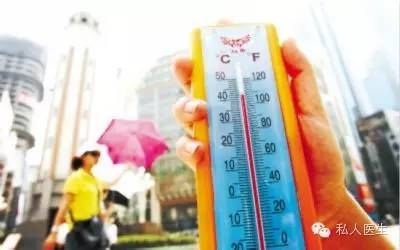

昨天，全国迎来今年最大范围高温天气。天南海北的的网友们都在喊热,广州最高温测到了39℃,北京一度飙过了40℃,重庆也有37℃，河北永年以42℃热冠全国……
网 友 讲 真，就现在这个天，随便一条活蹦乱跳的鱼，一上岸就是一条巫山烤鱼;岁月静好的一头猪，拉出去散散步就是火烧蹄髈;蔬菜加点麻椒辣椒，瞬间做成了麻辣烫; 冷面刚从冰水里出来，就是一道东北烤冷面;路人甲出门溜达，也是最火红人;随机播放一首歌，就是年度热单;闭眼睛下个电影，也是烧脑神作。
以前愚蠢地觉得“中暑不过是在热地方呆久了，再回凉地方歇一歇就会好了”，直到有一天看了一篇科普文章，里面有一句“鸡蛋煮熟了之后，在凉水里放再久也不会变回生鸡蛋。而中暑就好比你的大脑皮层被煮了。”……吓得我从那之后一直很注意防暑降温。
网 友
高温天气，严重影响我们的正常出行及生活，还有可能威胁我们的健康甚至是生命，因此需要每个人警惕。
在高温(一般指室温超过35℃)环境中或炎夏烈日曝晒下从事一定时间的劳动，且无足够的防暑降温措施，常易发生中暑，有时气温虽未达到高温，但由于湿度较高和通风不良，亦可发生中暑。此外，年老体弱、孕妇、肥胖及有甲亢、糖尿病、心血管疾病的患者也极易发生中暑。
头昏眼花、乏力、口干、恶心呕吐、发烧、惊厥、抽搐、无汗、呼吸困难等，如治疗不及时，容易引起合并症，甚至死亡。
(1)尽量避免在日照最强烈的上午10时至下午4时外出; (2)保持室内通风，降低室温; (3)高温下工作时间不宜过久，每天尽量不要超过8小时; (4)降低工作强度，备好防暑降温饮料，尽量多补充淡盐开水或含盐饮料; (5)保证充足睡眠，多吃些营养丰富的水果和蔬菜; (6)尽量穿透气、散热的棉质衣服。
(1)迅速将中暑者移至凉快通风处; (2)脱去或解松衣服，使患者平卧休息; (3)给患者喝含盐清凉饮料或含食盐0.1%-0.3%的凉开水; (5)用凉水或酒精擦身; (6)重度中暑者立即送医院急救。 酷暑高温6不宜
1降温不宜过快
大汗淋漓时，不要到风扇前揭开衣服猛吹，或拧开水龙头，让冷水直冲而下，实现“快速降温”。这种“快速冷却”的方式，常常会“快活一时，难受几天”，甚至引起各种疾病。
2空调不宜过冷
居室的温度应在26℃～29℃之间不断变换，才对身体健康有利。
3喝水不宜过量
多喝水是防暑的好措施，可过量饮水也会引起中毒。尤其在炎热的夏季，人们大量出汗之后，体内的钠盐等电解质也随之丢失，如果此时大量饮用白开水而未补足盐分就会出现肌肉抽搐或肌肉痉挛性疼痛。
4衣服不宜过露
赤膊只能在皮肤温度高于环境温度时，才能通过增加皮肤的辐射、传导散热起到降温的作用。而酷暑之日，最高气温一般都接近或超过37℃，皮肤不但不能散热，反而会从外界环境中吸收热量，因而夏季赤膊会感觉更热。
5墨镜不宜过黑
墨镜不宜过黑。许多人认为太阳镜颜色越深越能保护眼睛，其实，镜片颜色过深会严重影响能见度，眼睛因看东西吃力而受到损伤。因此，夏季选择太阳镜的标准，应该是镜片能穿过30%的可见光线，以灰色和绿色为最佳。
6不宜以冷抗热
人颅内的动脉血管对疼痛是很敏感的，在高温季节，运动劳作后头部易出汗，这时血管扩张，如果用冷水冲洗，有可能引起颅内血管功能异常，发作时会有头发 晕、眼发黑、呕吐的现象，严重的话，可能会引起颅内大出血。可见以冷抗热的方式是不可取的。虽能解一时之急，却并非良策。夏天气温接近人体的温度，人体散 热方式以汗蒸发为主，所以用热来除热才是比较好的养生方法。
小贴士：夏天应穿什么颜色的衣服?
很多人都以为，夏天应该以浅色为主，尤其是白色最佳。其实，在颜色选购方面，很多人都犯了一个大错。白色或太浅的颜色会反射紫外线，易伤害皮肤，而红色光波最长，可大量吸收日光中的紫外线，所以夏天穿红色的衣服能防止皮肤被晒伤。
推荐阅读：
亚健康的十大症状纯属忽悠?
怎样预防猝死和预防癌症?
别让“猝死”突破你的四大防线
发现早期肺癌能延长生命吗?
更年期女性应该选择哪些体检项目?
三伏天，“灸”在当夏
企业家和高管应该选择哪些健康管理服务?
6种隔夜食物 强致癌
私人医生帮你解析：酸性体质是否是百病之源
炒菜致癌？为您的餐桌支几招！
中医教您“一泡百病消”的泡脚秘籍
美国硅谷市长团访问奥亚医院，慈铭模式享誉国际